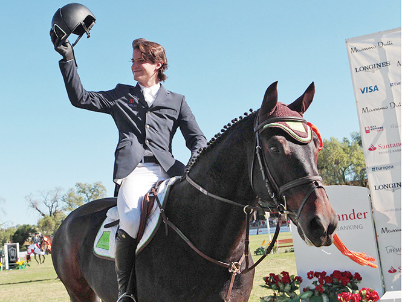
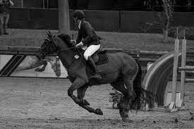
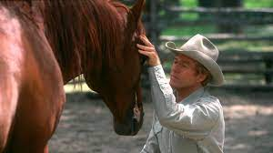
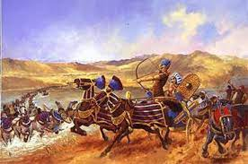

La equitación es el arte de montar a caballo, la palabra viene del latin equino que significa
montar a caballo una especialidad dentro de los deportes ecuestres, en ella no solo se evalúa al
jinete, sino también al caballo y el desempeño de ambos juntos.
Por ello , la equitación es el arte de mantener el control preciso sobre un caballo, así como
los diferentes modos de manejarlo. La equitación implica también los conocimientos para cuidar
caballos y saber usar la equipación que se requiere para esta actividad.
La primera escuela de equitación fue fundada en el año 1.539 en la ciudad Italiana de Ferrara.
La equitacion, el deporte mas fino.
Investigación
12/11/22
Las mejores razas de caballos
1. El Caballo Andaluz: Es un caballo español originario de Andalucía. Es una de las razas de caballos más
antiguas del mundo. Su nombre oficial es "Pura Raza Española" (PRE), y se le conoce
comúnmente como "Caballo Español". Años atrás era un caballo muy favorito entre los
nobles por su fuerza y poder (se usaban en la guerra) y admirable belleza. Tienen
colas y melenas muy tupidas que les dan un aspecto extraordinariamente hermoso. Este
caballo también se utilizó para criar nuevas razas europeas y americanas como el
Frisón, Hispano-Árabe, Mustang o Peruano de Paso, entre otras. Hablando en terminos
generales, el valor de estos caballos suele rondar entre los 40 mil y 60 mil
euros ya que son de ejemplares de pura raza
Dada su elegancia y su fisonomía, este caballo se ha convertido en uno de
los favoritos frecuentados en la gran pantalla tierranea
2. El caballo arabe: Esta raza es considerada una de las más antiguas del mundo junto con la anterior.
Hay evidencia arqueológica de que los caballos de hace 4.500 años eran muy similares
a los árabes de hoy. La reputación de estos caballos proviene de su inteligencia,
gran resistencia y fuerte carácter. Por la apariencia, siempre podemos encontrar que
levantan la cola y la cabeza en alto, tienen narices pequeñas, fosas nasales grandes
y ojos grandes. Esta raza también se usa ampliamente en mezclas con otras razas para
agregar velocidad, delicadeza, resistencia y buena estructura ósea. El precio de un
caballo árabe de pura raza, podría rondar los 25 mil y los 35 mil euros.
El caballo árabe es una de las razas de caballos más puras y con mejores
aptitudes físicas del mundo.Diana Oliver
Europeo
3. Caballo Pura sangre: El caballo se originó en Inglaterra y se desarrolló en el siglo XVIII. Procede de
una mezcla de yeguas inglesas cruzadas con sementales árabes, barberiscos y akhal
teke. Este caballo tiene las finas cualidades de un galope. Tiene piernas largas y
musculosas y cuartos traseros fuertes que pueden soportar fácilmente la fuerza de
una carrera. Es un caballo muy utilizado para las carreras, aunque también se
utiliza para la monta y el entrenamiento en general por su excelente condición
deportiva. El costo de un caballo pura sangre puede rondar entre los 20 mil y los 30
mil dólares.
El purasangre es el caballo de una raza que es producto del cruce de la
Árabe con las del norte de Europa
Comparación de precios
entre 40 y 60 mil euros.
entre 25 y 35 mil dolares.
entre 20 y 30 mil dolares
Este es un hermoso ejemplar de pura sangre.
Mi experiencia
3/feb/2023
Como son los torneos?
Los torneos de equitación en Querétaro son una experiencia inolvidable para todos los amantes de los caballos. Con una gran tradición equestre y una gran pasión por los caballos, Querétaro es el lugar perfecto para ver algunas de las mejores competencias de equitación en México. Los torneos de Querétaro son conocidos por su ambiente vibrante y su público apasionado, y ofrecen una oportunidad única para ver a los mejores jinetes y caballos del país.
Desde exhibiciones de salto hasta competiciones de dressage, los torneos de Querétaro ofrecen una amplia variedad de eventos para los espectadores. Además, con la combinación de una gran infraestructura y una tecnología avanzada, los torneos de Querétaro ofrecen una experiencia única e inolvidable para todos los amantes de los caballos. La atención al detalle y el cuidado que se pone en cada competición garantiza una experiencia sin igual para los espectadores.
En los torneos de equitación en Querétaro, los jinetes compiten en una variedad de categorías y eventos, desde el salto de obstáculos hasta la exhibición de danzas a caballo. Los jinetes y sus caballos son valorados por su habilidad, técnica y estilo, y la competencia es siempre intensa y emocionante. Además, los espectadores tienen la oportunidad de ver de primera mano la belleza y la majestuosidad de los caballos en acción, lo que hace que la experiencia sea aún más emocionante.
En resumen, los torneos de equitación en Querétaro son una oportunidad única para ver la pasión, la habilidad y la majestuosidad de los caballos. Con un ambiente vibrante y un público apasionado, los torneos de Querétaro ofrecen una experiencia única e inolvidable para todos los amantes de los caballos. Asistir a uno de estos eventos es una oportunidad única para ver de primera mano la habilidad y la dedicación de los jinetes y los caballos, y para apreciar la gran tradición y pasión por los caballos en Querétaro.
Texto de descripción de mi ilustración.
Tipos de caballos
03/feb/2023
Que tipos de caballos son los mejores?
El Caballo Andaluz es una de las razas más populares para la equitación. Es conocido por su inteligencia, agilidad y docilidad, lo que lo hace ideal para exhibiciones y competiciones. Además, es muy dócil y fácil de entrenar, lo que lo hace ideal tanto para jinetes principiantes como experimentados.
El Caballo Frisón es otra raza muy popular en el mundo de la equitación. Se destaca por su belleza y elegancia, así como por su impresionante movimiento y gran resistencia. Es un caballo fuerte y versátil, capaz de desempeñarse bien en diferentes disciplinas, desde salto hasta dressage. Sin embargo, debido a su naturaleza fuerte, es recomendable que los jinetes tengan cierta experiencia antes de montar un Caballo Frisón.
Por último, el Caballo Holsteiner es una de las razas más populares para el salto y la equitación de campo. Es conocido por su velocidad, fuerza y agilidad, y es considerado uno de los mejores caballos para deportes ecuestres de alto rendimiento. Además, es un caballo inteligente y fácil de entrenar, lo que lo hace ideal para jinetes experimentados que buscan un compañero confiable y talentoso.
Caballo Andaluz
Jinetes Mexicanos
3/02/2023
Jaime Azcarraga
México es un país conocido por su tradición en la equitación y por tener algunos de los mejores jinetes del mundo. Entre ellos destaca el nombre de Jaime Azcárraga, considerado por muchos como el mejor jinete de equitación mexicano de todos los tiempos.
Jaime Azcárraga nació en la Ciudad de México en 1962 en una familia dedicada a la equitación. Comenzó a montar a caballo a una edad temprana y pronto demostró un talento natural en la disciplina de saltos ecuestres. Con el apoyo de su familia, se dedicó a entrenar y competir en diferentes torneos de equitación.
Durante su carrera, Azcárraga ha ganado numerosos títulos y reconocimientos en México y en el extranjero. Uno de sus mayores logros fue la medalla de oro en los Juegos Panamericanos de 1991 en La Habana, Cuba, en la disciplina de salto individual.
Además, Azcárraga ha representado a México en varios campeonatos mundiales y juegos olímpicos, incluyendo los Juegos Olímpicos de Barcelona de 1992 y los Juegos Olímpicos de Atlanta de 1996. En estos eventos, compitió en la disciplina de salto individual y por equipos, demostrando su habilidad y talento para la equitación en la escena mundial.
A lo largo de su carrera, Azcárraga ha sido reconocido por su talento, su dedicación y su compromiso con la equitación. Es un referente para muchos jinetes y entrenadores en México y en todo el mundo. En 2014, fue incluido en el Salón de la Fama de la Equitación Mexicana, un reconocimiento que destaca su legado y su contribución al deporte ecuestre.
Más allá de sus logros en la competición, Azcárraga también ha sido un defensor de la equitación y ha trabajado para fomentar el deporte en México. Ha sido parte de iniciativas para promover la equitación en la juventud y ha sido un mentor para muchos jinetes jóvenes en el país.
En resumen, Jaime Azcárraga es considerado por muchos como el mejor jinete de equitación mexicano de todos los tiempos. Su talento, dedicación y compromiso con el deporte ecuestre lo han llevado a ganar numerosos títulos y reconocimientos a lo largo de su carrera. Además, ha sido un defensor de la equitación y ha trabajado para fomentar el deporte en México. Su legado seguirá siendo un referente para muchos jinetes y entrenadores en el país y en todo el mundo.

Jaime Azcarraga
Mexico
2/02/2023
Equitacion en Queretaro
La equitación es un deporte apasionante y una actividad recreativa que se practica en muchas partes del mundo, y la ciudad de Querétaro no es la excepción. A lo largo de los años, esta actividad ha ganado popularidad en la ciudad y ha llegado a ser una actividad de ocio muy apreciada por los amantes de los caballos.
En Querétaro, se pueden encontrar diversas opciones para practicar equitación, tanto para principiantes como para jinetes experimentados. Hay una amplia variedad de escuelas de equitación, clubes hípicos, y empresas especializadas que ofrecen tours a caballo. Además, también hay varios eventos ecuestres que se llevan a cabo en la ciudad, como exhibiciones, competiciones, y cabalgatas.
Entre las opciones más populares en la ciudad de Querétaro, se encuentran los clubes hípicos, que son lugares destinados a la práctica de la equitación. Estos lugares ofrecen una amplia gama de actividades, como clases de equitación, paseos a caballo, salto de obstáculos, y competiciones, entre otras. Los clubes hípicos suelen estar ubicados en áreas rurales, lo que permite a los jinetes disfrutar de la naturaleza mientras practican su deporte favorito.
Por otro lado, también existen empresas que ofrecen tours a caballo en la ciudad de Querétaro. Estos tours son una excelente opción para quienes quieren disfrutar de un paseo a caballo por los hermosos paisajes de la ciudad y sus alrededores. Durante estos tours, los guías ofrecen información sobre la historia de la ciudad y sus alrededores, mientras los jinetes disfrutan de un agradable paseo a caballo.
Además, en la ciudad de Querétaro también se llevan a cabo diversos eventos ecuestres, como competiciones de salto, exhibiciones de equitación, y cabalgatas. Estos eventos son una excelente oportunidad para los jinetes de todas las edades y niveles de experiencia para reunirse, compartir su amor por los caballos, y aprender de los demás. También son una excelente oportunidad para que los espectadores disfruten del espectáculo y admiren la belleza y elegancia de los caballos.
En la ciudad de Querétaro, la equitación es una actividad muy valorada por la comunidad. Además de ser una actividad recreativa y deportiva, también se ha convertido en una forma de terapia para muchas personas. Montar a caballo puede ayudar a mejorar la postura, fortalecer los músculos, aumentar la flexibilidad y la coordinación, y reducir el estrés y la ansiedad.
En resumen, la equitación es una actividad muy popular en la ciudad de Querétaro. Hay una gran variedad de opciones para practicar este deporte, desde clubes hípicos hasta empresas que ofrecen tours a caballo. También existen diversos eventos ecuestres que se llevan a cabo en la ciudad. Además de ser una actividad recreativa y deportiva, la equitación también puede ser una forma de terapia para muchas personas. Si eres un amante de los caballos y estás en Querétaro, no dudes en disfrutar

Queretaro
Peliculas
2/02/2023
Equitacion en las Peliculas
La equitación es una actividad que ha sido representada en la pantalla grande en numerosas ocasiones. Películas de diferentes géneros han incluido caballos y jinetes en sus historias, creando emocionantes aventuras, romances y dramas. A continuación, se presentan algunas películas que tienen que ver con la equitación y que han dejado huella en la cultura popular.
Una de las películas más emblemáticas que tiene que ver con la equitación es "El Hombre que susurraba a los caballos" (1998), dirigida por Robert Redford y protagonizada por él mismo y Kristin Scott Thomas. La película cuenta la historia de una mujer que pierde a su hija y su caballo en un accidente, y busca la ayuda de un hombre que tiene la capacidad de comunicarse con los caballos. La película es un drama emotivo y conmovedor que muestra la conexión entre los seres humanos y los animales, y la importancia del amor y la confianza en la vida.
Otra película que ha dejado huella en la cultura popular es "Seabiscuit" (2003), dirigida por Gary Ross y protagonizada por Tobey Maguire, Jeff Bridges y Chris Cooper. La película cuenta la historia real de un caballo de carreras llamado Seabiscuit, que se convirtió en una leyenda en los años 30. La película muestra la relación entre el jinete, el entrenador y el caballo, y cómo logran superar obstáculos y adversidades para llegar a la cima. "Seabiscuit" es una película inspiradora y emocionante que demuestra que los sueños pueden hacerse realidad si se trabaja duro y se tiene perseverancia.
Otra película que tiene que ver con la equitación es "Secretariat" (2010), dirigida por Randall Wallace y protagonizada por Diane Lane y John Malkovich. La película cuenta la historia real de Secretariat, un caballo de carreras que en 1973 ganó la Triple Corona, una hazaña que ningún otro caballo había logrado en 25 años. La película muestra la relación entre la dueña del caballo, Penny Chenery, y su entrenador, Lucien Laurin, y cómo juntos lograron llevar a Secretariat a la victoria. "Secretariat" es una película emocionante y llena de pasión, que demuestra que el trabajo en equipo y la determinación pueden lograr cosas increíbles.
Finalmente, una película más reciente que tiene que ver con la equitación es "The Rider" (2017), dirigida por Chloé Zhao y protagonizada por Brady Jandreau. La película cuenta la historia de un joven jinete de rodeo, que después de sufrir una lesión grave en la cabeza, se ve obligado a abandonar su carrera. La película muestra cómo el protagonista lucha por encontrar su identidad y su lugar en el mundo, y cómo su amor por los caballos lo ayuda a superar sus problemas. "The Rider" es una película conmovedora y realista, que muestra la conexión profunda entre los jinetes y sus caballos, y cómo a veces los sueños tienen que cambiar para seguir adelante.
En conclusión, la equitación ha sido representada en la pantalla grande en numerosas ocasiones,

Una Gran Pelicula
La historia de los caballos
2/02/2023
El origen de la equitacion
a equitación, el arte de montar a caballo, es una de las formas más antiguas de transporte humano. Los caballos han sido domesticados y utilizados por el hombre desde hace miles de años para viajar, cazar, trabajar y luchar en la guerra. La historia de la equitación es rica y variada, y ha evolucionado a lo largo de los siglos para convertirse en un deporte y una actividad de ocio popular en todo el mundo.
El origen de la equitación se remonta a la antigüedad. Los primeros registros de la domesticación de los caballos datan de hace unos 5.000 años, en la región de la actual Ucrania. Los caballos salvajes fueron capturados y domesticados por los nómadas de las estepas, quienes los utilizaban para el transporte y la guerra. Desde allí, la equitación se extendió por todo el mundo, y los caballos se convirtieron en una parte esencial de la vida humana.
La equitación ha tenido una gran importancia en muchas culturas a lo largo de la historia. En la antigua Grecia, la equitación era una habilidad fundamental para la aristocracia, y se utilizaba en competiciones deportivas y en las guerras. Los romanos también valoraban mucho la equitación, y la utilizaban para conquistar y controlar vastos territorios. En la Edad Media, la equitación era una habilidad necesaria para los caballeros, que luchaban en las cruzadas y en las guerras por el poder. La equitación también ha sido una parte integral de la vida de las tribus indias americanas, quienes cazaban y luchaban a caballo.
Con el tiempo, la equitación se convirtió en un deporte y una actividad de ocio. En el siglo XVI, los nobles europeos comenzaron a organizar competiciones de equitación para mostrar su habilidad y elegancia en el manejo de los caballos. La equitación también se convirtió en una forma de entrenamiento militar, y los soldados practicaban equitación para mejorar su habilidad en la batalla.
En el siglo XVII, la equitación se convirtió en una actividad más accesible para la población en general. Se fundaron escuelas de equitación en Europa, donde se enseñaba la equitación a personas de todas las edades y clases sociales. La equitación también se convirtió en un deporte olímpico en 1900, y desde entonces ha sido una parte integral de los Juegos Olímpicos.
Hoy en día, la equitación es una actividad popular en todo el mundo. Las personas montan a caballo por placer, ejercicio y competición. También se utilizan caballos en la agricultura, la ganadería y la policía. La equitación es una actividad que requiere habilidad, paciencia y dedicación, pero también puede ser una experiencia gratificante y enriquecedora.
En conclusión, la equitación ha sido una parte esencial de la vida humana desde hace miles de años. Desde su origen como una forma de transporte y de guerra, hasta convertirse en un deporte y una actividad de ocio popular, la equitación ha evolucionado.

Se remonta a años atras
Top
10 competencias de equitación
04/10/22
El top 10 de equitación
Meydan (Dubái)
St. Moritz (Suiza)
Flemington (Australia)
Palio de Siena (Italia)
Happy Valley (China)
Rolex FEI World Cup
Longines Global Champions Tour
Goodwood y Cheltenham (Reino Unido)
Sanlúcar y Ribadesella (España)
Campeonato Mundial de Saltos Ecuestres
La mayoria de las competiciones como podras ver son en Europa, ya que ahi fue donde nacio el
deporte y donde todos los jinetes quieren participar
Las competencias son ostentosas y elegantes.
Video recopilacion de equitación
07/10/22
Este video de la Real Federación española de equitación sobre su competencia, esta es una d elas más importantes del mundo
 La Equitación
La Equitación